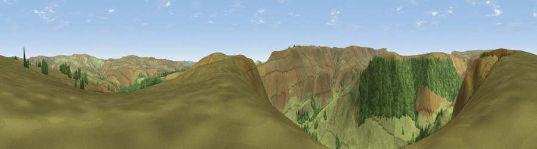

Viewpoint near Edale
#24951 in England · top 46% of its area beats it · near EdaleWhere it is
The exact computed spot (SK 14625 90825). Click the marker for map links.
The view, rendered

A 360° render of this exact spot computed from the terrain model, tree cover and land cover — summer colours, afternoon light, calibrated against photographs of famous viewpoints. Real trees, hedges and buildings will differ in detail.
The panorama
Grey silhouette: terrain skyline in each direction (720 bearings, Earth curvature and refraction included). Dashed green: skyline with trees (+15 m) and buildings (+8 m) as obstacles. Blue strip: how far the ground is visible on each bearing.
Where the view opens
Wedge length = distance to the farthest visible ground on that bearing (vegetation-aware). Rings at 10, 25 and 50 km.
What fills the view
79% grassland · 21% woodland
Angular shares of the visible panorama (visual magnitude), not map area. Landscape diversity 0.22 (0–1 Shannon).
Key numbers
More beautiful places nearby
The staircase of upgrades: each row has a higher view potential than everything closer. Driving times are estimates from straight-line distance, calibrated against real road routing — check an actual route before setting out.
| Place | Direction | Drive | Score |
|---|---|---|---|
| Rowlee Pasture | SE · 1 km | ~2 min | 53.3 |
| Viewpoint near Edale | SSW · 3 km | ~8 min | 66.8 |
| Back Tor | E · 5 km | ~11 min | 71.1 |
| Viewpoint c7795_8393 | ESE · 5 km | ~11 min | 71.7 |
| Viewpoint near Thornhill | ESE · 6 km | ~12 min | 74.1 |
| Harrop Edge | WNW · 17 km | ~30 min | 74.6 |
| Wild Bank | WNW · 17 km | ~30 min | 76.2 |
| Viewpoint near Carrbrook | WNW · 18 km | ~31 min | 77.1 |
53.41403, -1.78144 · source: screening · position refined by local search. Computed location — check access rights before visiting.